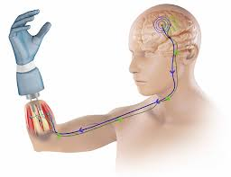

What is a neuroprosthetic system? It is a tool that allows signal information to translate into prosthetic movements.
Why this research? Neuroprosthetic control requires reliable decoding(gesture prediction) under strict power and latency budgets. We study encoding schemes (Rate/Delta/Latency) and model families (LSTM, TCN, SNN, Hybrid, SpikingTCN) to map the accuracy–efficiency trade‑off.